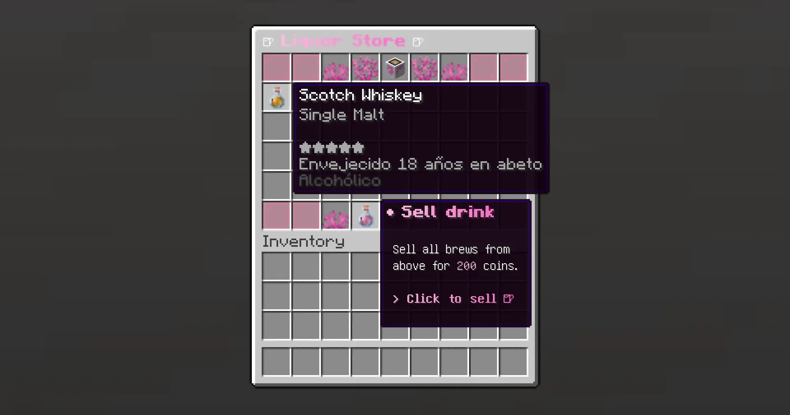

Prices
How brew pricing works.
Formula
- base_price — configured per recipe in
config.yml - quality_score —
0.01to1.0, from the brew'sbrewery:scoreNBT data
What is quality_score?
Quality is assigned by the brewing plugin during the brewing process. It reflects how well the brew was crafted — fermentation time, distillation runs, and aging in barrels all influence it. A perfectly crafted brew reaches 1.0; a rushed or failed one sits near 0.01.
TheBrewingMarket reads this value automatically at sell time from whichever plugin is active — you do not need to configure anything for it to work.
TheBrewingProject
Quality comes from the brew's brewery:score NBT tag. Range: 0.01–1.0.
BreweryX
Quality is read via brew.getQuality() (max 10) and normalized to 0.0–1.0 automatically.
Players can see a brew's quality by hovering over it in their inventory — it is displayed as stars or a numeric score depending on the plugin configuration.
200 × 0.85 = 170 coins.

Default Prices
market:
prices:
default: 10
beer: 25
darkbeer: 30
wheatbeer: 30
cidre: 35
wine: 150
mead: 120
ap_mead: 130
vodka: 130
g_vodka: 160
whiskey: 200
fire_whiskey: 250
rum: 180
tequila: 170
gin: 160
brandy: 200
absinthe: 250
gr_absinthe: 300
apple_liquor: 140
shroom_vodka: 220
gin_and_tonic: 180
red_sangria: 160
french_75: 200
coffee: 40
iced_coffee: 50
hot_choc: 35
eggnog: 60
hangover_detox: 80
The default key is used as fallback when a recipe is not listed.
Adding Custom Recipes
market:
prices:
my_custom_brew: 175